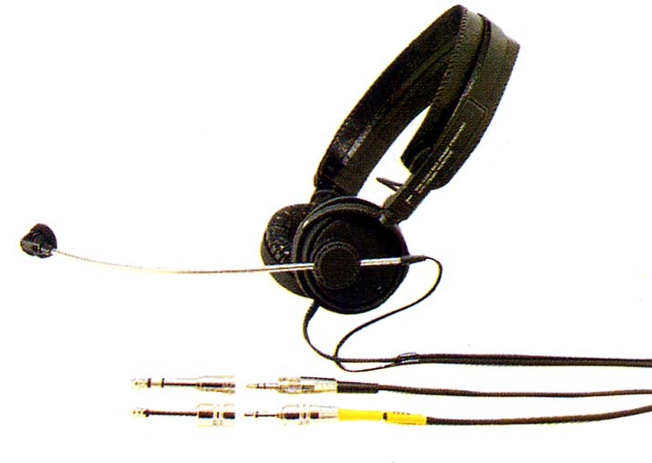

ATH-30COM

■価格 12,000円■型式 オープンバック・ダイナミック型（マイク ダイナミック型）■振動板 ■インピーダンス 30Ω■再生周波数帯域 20-20,000Hz （マイク 200-10,000Hz）■許容入力 250mW■感度 103dB/mW （マイク -87dB）■コード 2.5ｍ ステレオ3.5mmプラグ■重量 95g（コード含まず）■発売 1988年4月■販売終了 ■備考 ミニ→標準変換アダプター付属
テクニカのインデックスへ